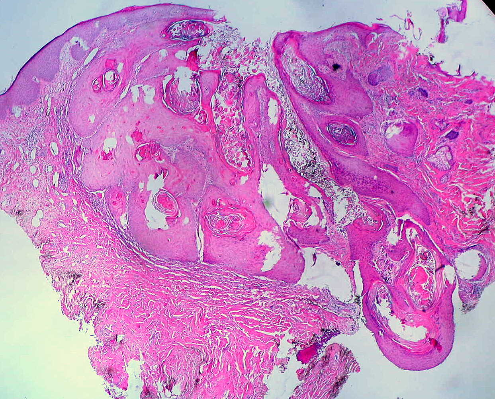
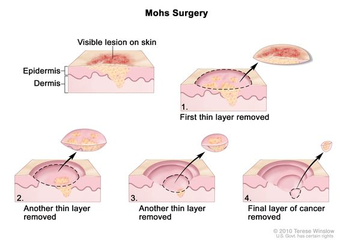

This website, the author, Myra Lewis, provides information and research from the field of dermatology. The paper covers topics of the job of dermatology, including education, salary, disparities, and more. The author examines her interests in dermatology and determines if this career path is appropriate for her. The paper provides insight into what it is like to in the career field of medicine and also helping students wanting to pursue a career in medicine.
Dermatologists are known as the “skin doctors”, they provide services to over 3000 different diseases and conditions that affect the skin, hair, and nails. Dermatologist treat 3000 different diseases and conditions They help to treat common skin issues like eczema, acne, skin infections, and even skin cancer. With such diversity in the dermatology field, it gives dermatologists lots of options to choose a certain area in which they would like to work. Many dermatologists work in spas, working with skincare and spa procedures. Several dermatologists work in hospitals and clinics, treating patients who need immediate care.
Commonly working during the week helps to leave, nights and weekends to themselves. Many dermatologists do not work in hospitals, but they work in private practices, clinics, and many other places. On average dermatologists see 100 to 124 patients a week and spend about 9 to 12 minutes per patient.
Doctors choosing to work in hospitals and clinics tend to get paid around $157,000 to $325,000 a year. Those working in private practices get paid around $305,000 to $382,000 a year. In Charlotte, North Carolina, a dermatologist on average is paid $303,883 a year.
"it is going to take a great deal of commitment to pursue the goal and the career in medicine, but disparities that are in the medical field are true and they have been documented several times. Remeber people of color are more likely to have poorer outcomes, not from a lack of money because of the treatment given to patients."-Dr. Joni Claville
| Cosmetic dermatology | |
|---|---|
| Dermatopathology |  |
| Immunodermatology | |
| Mohs surgery |  |
| Pediatric dermatology | |
| Teledermatology |
Email: derminfo@gmail.com
Phone Number: 123-456-7890